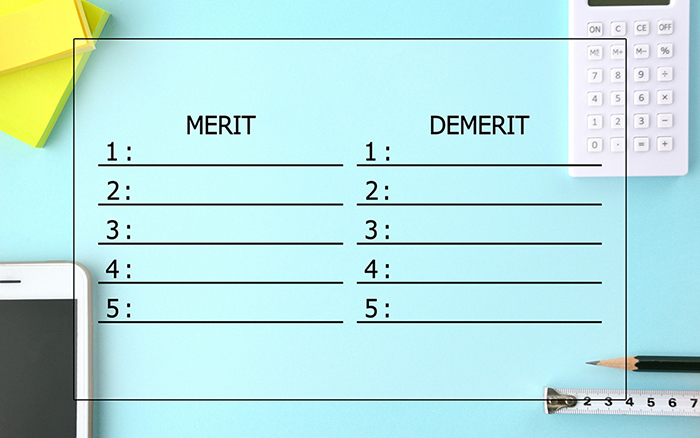

不動産を相続した、または相続する可能性がある方へ
～相続する前に知っておくべきことと相続対策～
不動産関連の相続には、さまざまな不安や疑問がつきまとうものです。税金をはじめとする費用や具体的な方法など、専門知識も必要になります。また、山梨県外にお住まいであっても、甲府市と周辺エリア(甲斐市・笛吹市・中央市・中巨摩郡昭和町)にいらっしゃるご親族からマンションや戸建て、土地などを相続する可能性もあるでしょう。状況が違えば、適切な対応方法も異なります。こうしたお悩みをお持ちの方は、ぜひ共同開発までご相談ください。
不動産相続の種類について
不動産を相続する方法は大きく「相続」と「生前贈与」の2種類に分けられます。シチュエーションごとに、どちらを選ぶべきかを考えなくてはなりません。以下から、それぞれの概要についてご紹介します。
相続とは
亡くなられたご親族のことを被相続人と呼びます。一方、財産を受け継ぐ人を相続人と呼びます。相続では、被相続人の所有している不動産や預貯金など（相続財産・遺産）が相続人に受け継がれます。現在の法律上では、配偶者や子ども、兄弟姉妹といった親族が遺産を受け継ぎますが、生前に遺言書を作成することで家族以外へ遺産を引き継がせることもできます。
生前贈与とは
相続は被相続人が亡くなられた後に行われる手続きです。一方で生前贈与は、存命中に誰かへ財産を譲るという法律行為であり、時期や相手に縛られません。なお、生前贈与を行う人を贈与者と呼び、受け取る側の人を受贈者と呼びます。
不動産相続でかかる費用について
| 相続税 贈与税 |
相続と生前贈与、いずれの場合も資産を引き継ぐ際には税金がかかる場合があります。ただし、課税対象となる条件はそれぞれに異なります。 |
|---|---|
| 登録免許税 | 不動産の名義が変更された場合は、法務局で相続登記を行い、名義変更をする必要があります。この際には、不動産の固定資産評価額の0.4％に当たる登録免許税が必要です。 |
| 書類取得費 | 相続登記の際には、戸籍謄本や住民票、不動産登記事項証明書などさまざまな書類が必要です。これらの書類取得にはそれぞれ少額ではありますが費用がかかります。 |
| 司法書士報酬 | 相続登記の手続きは、司法書士などに代行するのが一般的です。この際には、司法書士報酬が必要です。費用はどこに頼むのかで異なりますが、およそ10万円が相場です。 |
| 固定資産税 | 毎年1月1日の時点で不動産を所有している人に対し課される税金です。相続によって不動産を取得した場合には、翌年から固定資産税がかかります。 |
| 不動産取得税 | 名称のとおり、不動産を取得した際に課される税金です。固定資産税評価額の3％が必要となります。ただし、相続による取得の場合には課税されないという点に注意が必要です。あくまで相続人以外の人が被相続人より不動産を取得した場合に課税されます。 |
| 不動産売却関連費用 |
相続した不動産を売却した場合には、一般的な不動産売却と同様の費用がかかります。代表的なものは以下です。
|
相続と生前贈与のメリット・デメリット

【相続】基礎控除と相続人次第で税金を減らせる
以下の式で求めた金額よりも遺産の合計額が少なければ、相続税はかかりません。
基礎控除額3,000万円＋(600万円×法定相続人数)
生前贈与の場合は、年間110万円以上の贈与で贈与税が発生します。つまり、遺産の総額が少なければ相続のほうが節税になるのです。
一方で、相続は相続人同士のトラブルにつながりやすいというデメリットもあります。これを回避するために、遺言書の用意などの手間が発生します。
【生前贈与】トラブルが少なく節税になるケースも
生前贈与は贈与者の意思がはっきりと示せるという点に大きなメリットがあります。そのため、相続のように親族間のトラブルも起こりにくい傾向にあります。なお、計画がまとまれば1カ月程度で手続きも終了となり、とてもスムーズです。
ただし、年間110万円を超える贈与には贈与税が発生するほか、不動産取得税や登録免許税、司法書士への手数料といった費用がかかります。ただし、これらを踏まえても相続税より贈与税が安くなるケースもあります。
不動産の相続対策について
ご紹介したとおり、一定の資産をお持ちの方には相続税や贈与税といった税金が関わってきます。何の対策もしないまま相続が行われれば、被相続人に対しての負担が大きくなってしまいます。
たとえば不動産を含め4,000万円の資産をお持ちの場合、そのまま相続をしてしまうと多額の相続税がかかってしまいます。一方、110万円を5年間被相続人に生前贈与しておけば相続税はかかりませんし、贈与税も基礎控除内ですから非課税となります。
そのほかにも、不動産を収益物件にしたり、教育資金贈与の非課税制度や贈与税の配偶者控除を活用したりといったさまざまな相続対策があります。ただし、どの対策が有効かはそれぞれに異なるため、専門家への相談がおすすめです。
税金だけじゃない！スムーズな相続のために
不動産対策は節税だけが目的ではありません。たとえば遺言書の用意や生前贈与は、被相続人である親族のトラブルを回避するのに非常に有効です。どれだけ信頼し合っている家族でも、金銭が絡むと争いに発展する可能性があります。それを回避するのも、相続対策の大切な役割です。
相続・生前贈与の流れ
相続の場合
相続には非常に多くの手続きが必要です。相続人がお亡くなりになった後に必要となる代表的な手続きを期限の目安と合わせてご紹介します。
| 期限目安 | 手続き内容 |
|---|---|
| 死亡から2週間以内 |
|
| 死亡から3カ月以内 |
|
| 死亡から4カ月以内 |
|
| 死亡から10カ月以内 |
|
| 死亡から1年以内 |
|
| 死亡から2年以内 |
|
| 死亡から3年以内 |
|
| 死亡から3年10カ月以内 |
|
| 死亡から5年10カ月以内 |
|
生前贈与の場合
生前贈与は、基本的に契約書の作成や法務局への必要書類提出のみです。たとえば不動産を生前贈与する場合は、以下の書類を作成・提出します。
- 不動産の権利証
- 印鑑登録証明書（発行より3カ月以内のもの）
- 登記原因証明情報
- 固定資産評価証明書
- 不動産の登記簿謄本（全部事項証明書）
- 新名義人の住民票
上記に加え、登記申請書の作成が必要です。
ただし、これらの手続きをすべてご自身で行うのは容易ではありません。そのため、税理士や司法書士などの専門家に依頼するのが一般的です。共同開発では、このような手続きも専門家と連携しながら対応可能ですので、まずはお気軽にご相談ください。
- 県外に住んでいる方でもお気軽にご相談ください
-
相続は誰にでも起こりえることでありながらも、実際に遭遇するのは突然のものです。心理的にもスケジュール的にも余裕がない中で、さまざまな手続きに対応するのは大変なことです。とくに被相続人様が他県にお住まいの場合は、より時間的な余裕がなくなります。
当社では、売却や買取だけでなく、空き家・空き地管理サービス、リースパックなどさまざまな対応が可能です。幅広い提案のなかから、お客様に最適なアドバイスを差し上げます。また、生前からの相続対策もぜひご相談ください。地域密着の不動産会社としての強みを生かし、スムーズで安心なご対応をお約束します。他県や海外にお住まいのお客様からとの対応実績も豊富にございます。
必要に応じて税理士や司法書士などの専門家と連携しながら準備を進めることも可能ですので、まずはお気軽にご相談ください。最適な相続のプランについてご提案いたします。